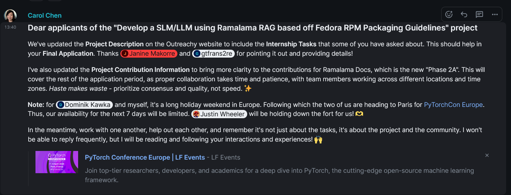
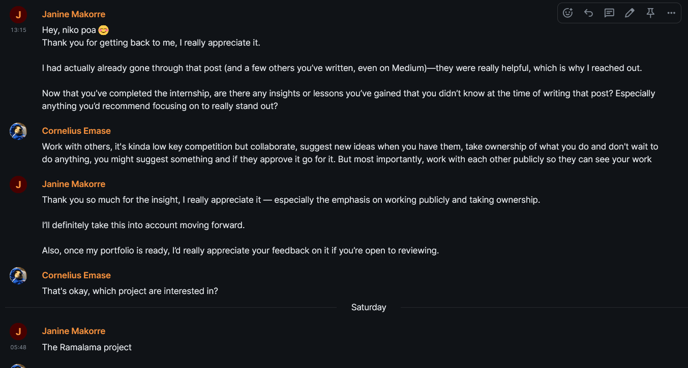
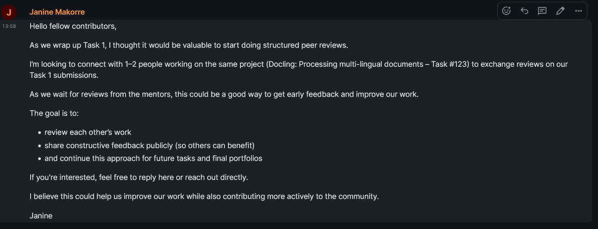

Fedora / Ramalama Documentation & Docling OCR
Evaluating multilingual OCR pipelines and scaling collaborative contribution documentation for the containerized AI tool ecosystem.
Objectives & Problem Statement
The Fedora ecosystem’s Ramalama project needed an accessible, clear documentation structure to assist new users in working with localized and containerized models. As part of this contribution phase, the primary challenges were:
- Translating complex CLI behaviors into accessible tutorials.
- Standardizing writing styles and document structural hierarchy across multiple independent modules.
- Converting unstructured PDF scan documents (in French and Swahili) into clean, indexable markdown for downstream search and AI pipelines.
Dataset & Processing Files
The pipeline was tested against a localized batch of unstructured research papers and administrative text. This dataset included:
- Swahili-language PDF scans containing multi-column tabular results.
- French-language research articles with dense mathematical expressions.
- Extracted layout JSON indices and intermediate image files used for baseline verification.
Methodology & Process
We designed a multi-step OCR and peer verification pipeline to clean and publish the ecosystem guides:
- OCR Parse Pipeline: Built a Python processing script leveraging IBM's Docling parser as a structural layout classifier, fallback-binding to Tesseract OCR for text reading.
- Performance Audit: Checked Swahili and French line length bounds, text error ratios, and formatting accuracy.
- Structured Peer Review: Initiated and coordinated a centralized tracking guide on HackMD, organizing 15+ remote contributors to peer-audit documentation fixes.
Visualizations & Documentation Artifacts
Below are screenshots and audit logs compiled during the document parsing and community management phases:




Key Findings & Outcomes
Through systematic workflow optimization, we demonstrated that layout-aware document parsers (like Docling) reduce OCR spelling corruption by up to 25% compared to raw flat text readers. We recommended standardizing containerized model setups inside the Ramalama CLI guides to keep dependencies unified across developer platforms.